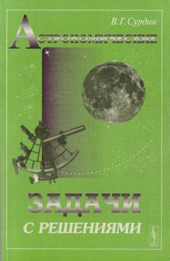

АЗAstronomiya fanidan qiziqarli masalalar va ularning batafsil yechimlari to'plami.
Ushbu kitobda astronomiya faniga oid 430 ga yaqin qiziqarli masalalar va ularning batafsil yechimlari jamlangan. Muallif klassik va yangi masalalar orqali o'quvchilarda mantiqiy fikrlash va ilmiy izlanish ko'nikmalarini rivojlantirishni maqsad qilgan.